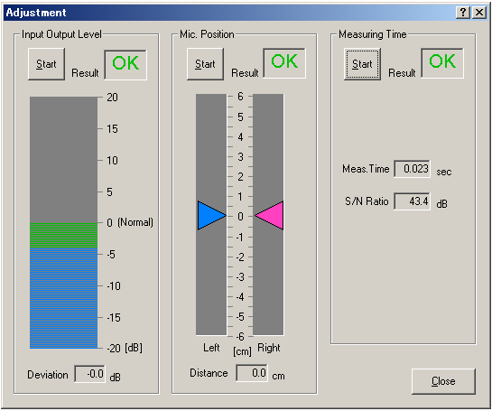

DSSF3 > RA > Impulse response > Measurement guide
Adjustment before the measurement
The following adjustment is not necessary if you can measure correctly. If you find difficulties, follow the instructions below.
RA has a function to check the measurement conditions. If they are not good, they can be adjusted automatically. Click the "Adjustment" button on the Impulse response window to open the Adjustment dialog as a figure below. Items to be checked are "Input Output Level", "Mic. Position", and "Measuring Time". They are displayed OK when the settings are correct.

Input Output Level
It is checked whether the input and the output sound levels are in the proper range. If OK is not displayed, check the following problems.
- Input volume of the amplifier is too small (or too large).
- Output volume of the soundcard or the loudspeaker is too small (or too large).
First, adjust the volume of each equipment and retry the check. If OK still does not come out, suspect the distortion and lower the reproduction volume in the volume control. When the Auto Level box (on the Impulse response window) is checked, the software outputs the measurement signal as 70 % of the maximum volume.
Mic. Position
When you perform the stereo/binaural measurement by using the dummy head, the head should be directed to the sound source precisely. If you are using a pair of microphones without the head, two microphones should also be placed at exactly the same distance from the sound source. In this test, the levels from two microphones are checked. Adjust the position and direction of the microphones until OK is displayed.
Measuring Time
If the necessary measuring time is not clear, it can be checked by this test. The proper measuring time is decided based on the S/N ratio. In the actual measurement, set the longer measuring time than suggested.
DSSF3 > RA > Impulse response > Measurement guide